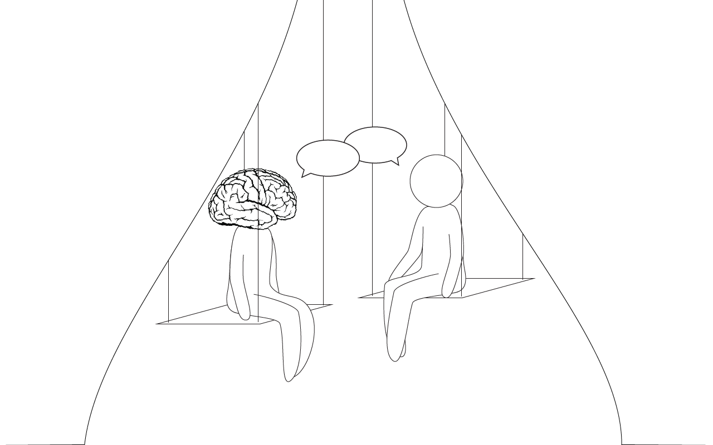
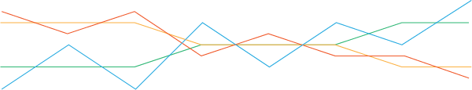

An exploration of body-mind relationship
The separate sense of self is an illusion created by language. While language defines things by separating them from their context, we exist through our context. We can exist without the definition we give ourselves through language, but we can’t exist without the relationship between our body, our mind and our surroundings.
Language isn’t fit to explain everything, yet it is the best way to communicate.
As a rational being I want to understand the relationship between body, mind and surroundings. As a social being I want to discuss it and share my knowledge. Even though we can never understand it through language alone.
To discuss the relationship between body, mind and surroundings design becomes the complimentary part to language. With Flow State I start this discussion.
Lets explore the body-mind relationship together and use design as our primary way of communicating.
Want to see me struggle to explain the body-mind relationship in words? Request acces to my thesis here: [link or email]
The manifest
Flow State started with the question, how can I create an environment that reacts to the movements of the body? To find an answer I collected movements and explored how they could be connected together. The flick of a finger or the flex of a foot becomes linked to the rising and falling of ‘wings’. The folding of two pieces of wood becomes a joint effort with the press of a hand.
The resulting collection of movements embodies my research, but it also became a method to create endless choreographies and compositions. Using pulleys and ropes I connect points across space and make them move together. By defining how these different points relate to each other I can design how they will move.
Collection of Movements: A research becomes a method
My journey starts with my personal experiences in circus training. There I first encounter a state where my body, mind and surroundings seem to become separate characters. Instead of me being the one that thinks, or the one that moves, I was the place where the three of them came together. Partly leading their interaction with each other and partly following their flow.
In my research I look to create a similar experience. As a result I made the Collection of Movements. A method that allows you to make endless connections between movements of the body, movements of my installation and different points in space. The resulting behaviour makes the installation come alive.
